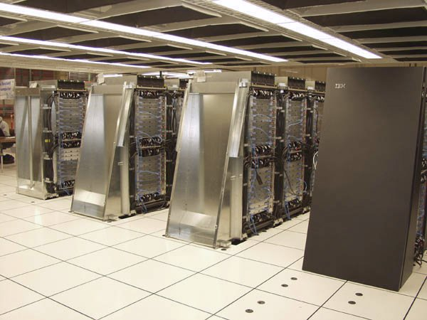
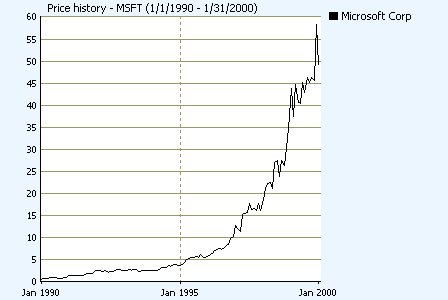

Glenn Reynolds, in his book Army of Davids, talks about how armies, like bloggers in pajamas, are changing journalism and other aspects of our lives. This book will focus on the free software army, created by Richard Stallman in 1985. The rank and file of this army consists of loosely-knit programmers, who live in many countries, speak different mother tongues, and either work for competing companies, or volunteer their time, to place their fingerprint on the world's software knowledgebase.
Sourceforge.net, the largest free software repository, has 1,900,000 registered developers today. Even if we divide that number by 50, because many work part-time, we are still left with an army of 38,000, three times bigger than the development teams of Google and Microsoft combined. And SourceForge is just one free software community; most of the bigger teams use their own servers to manage and organize the development process.
The most important piece of free software is the Linux (pronounced Lin ex) operating system, named after its founder Linus Torvalds, who started coding it in college. While Linux is generally not used on desktops today, it and other free software run on 60% of all websites, an increasing number of cellphones, and 75% of the world's top 500 fastest supercomputers:

IBM's Blue Gene (pun intended) supercomputer runs a lightweight Linux on each compute node, and a complete Linux on its management nodes.
For its part, Microsoft has fiercely fought against Linux and the trend towards free software by pretending it is just another proprietary competitor. With $28 billion in cash, dominant market share in Windows, Office and Internet Explorer, and an army of thousands of experienced programmers, Microsoft is a focused and enduring competitor.
Microsoft is the largest proprietary software company, but others have adopted its philosophy of hoarding all knowledge, no matter how irrelevant to their bottom line or useful to others. Google, the dominant player in Internet search, relies heavily on free software and considers it an important part of their success, but they are very secretive and protect nearly all the software they produce. They are a black hole of free software: innovation enters but never leaves.2
This is all perfectly legal and ethical, and the free market gives everyone an unfettered right to innovate in any way, create any license agreement, and charge anything for a product. But free software is not just a competitor, it is a different way of creating software.
The free software community has long threatened to take over the world. Evangelist Eric Raymond once growled to a Microsoft VIP that he was their “worst nightmare.” That was in the mid-1990s, when Microsoft stock price was doing this:

Microsoft stock price, 1990 – 2000
A friend installed Linux in the mid-90s but he gave up because his Backspace key didn't work. Free software has come a long way since then, reaching technical critical mass, if not market dominance. This book will discuss the remaining technical challenges preventing world domination, but inertia and ignorance are its biggest obstacles.
While this book presents a vision of the future, I believe we could have had these advancements decades ago. Free software's paradoxical success should also cause us to question other assumptions about copyright, patents, and other topics that this book will address.